發布時間：2026-05-19 20:13:48
按讚：71 留言：0
Interior Designers Made This with AI. ✨
Real interior design results created by the Rendair AI community 👇
1️⃣ Nora Sofalvi
2️⃣ Krzysztof Podbielski
3️⃣ Sharon Wong Mee Sing
4️⃣ Gizem Keskin
5️⃣ Olga L
From concept exploration to final presentation visuals, in...
直接開啟媒體（無廣告）
開啟 Instagram 原始貼文

發布時間：2026-05-18 23:32:39
按讚：122 留言：0
Do you like bubbles? Or making buildings out of bubbles? It brings a little joy to the city!
Try it yourself → rendair.ai
直接開啟媒體（無廣告）
開啟 Instagram 原始貼文

發布時間：2026-05-18 20:10:53
按讚：28 留言：2
Renovating a terrace with real furniture using AI.
From a simple space to a fully designed outdoor living area, with materials, layout, and planting, all in minutes.
Try it yourself → rendair.ai
Watch the full tutorial from the link on the first comment!
**Som...
直接開啟媒體（無廣告）
開啟 Instagram 原始貼文
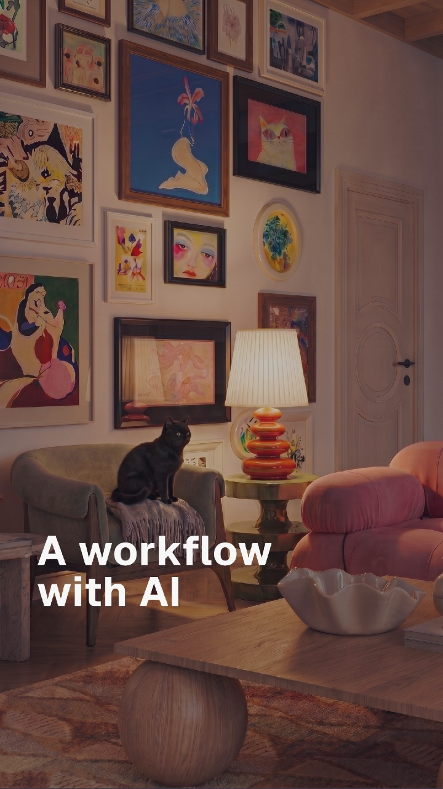
發布時間：2026-05-15 21:39:53
按讚：2,106 留言：15
A workflow created entirely with Rendair. Generate an isometric diagram, render it. Get a detailed view of any spot you want and create a product diagram. Turn on the lights and invite your cat to this cozy atmosphere!
Try it yourself → rendair.ai
直接開啟媒體（無廣告）
開啟 Instagram 原始貼文

發布時間：2026-05-14 22:05:24
按讚：29 留言：3
We’ve reimagined Tarot cards through an architectural perspective! By blending Gothic and Parametric design, we’ve reinterpreted the Tarot. Push the boundaries of creative production with Rendair.
Try it yourself → rendair.ai
直接開啟媒體（無廣告）
開啟 Instagram 原始貼文

發布時間：2026-05-14 20:35:13
按讚：28 留言：0
Design is often just iteration.
One empty under-stair space.
Multiple functional programs.
→ Reading nook
→ Workspace
→ Storage + pet zone
→ Indoor greenery
→ Kids’ corner
→ Feature installation
Instead of imagining every option manually, explore them instantl...
直接開啟媒體（無廣告）
開啟 Instagram 原始貼文

發布時間：2026-05-13 22:32:12
按讚：70 留言：0
Tired of using the same materials in your architectural visuals? One of the best secrets to creating "cool" architectural visuals is using interesting facade materials. Swipe to see my 5 favorites!
Save and use these material prompts in your own desi...
直接開啟媒體（無廣告）
開啟 Instagram 原始貼文

發布時間：2026-05-13 00:32:04
按讚：1,425 留言：9
Exploring form and innovative materials... Colored glass rods merging with a wavy facade. Let’s bring some color to the street!
Try it yourself → rendair.ai
直接開啟媒體（無廣告）
開啟 Instagram 原始貼文
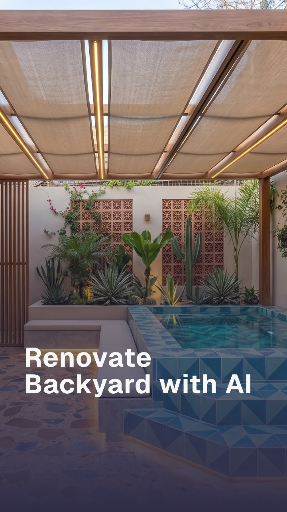
發布時間：2026-05-11 21:40:42
按讚：77 留言：1
Renovating a backyard with AI.
From an empty outdoor space to a fully designed garden with a pool, seating, and planting—all in minutes.
Try it yourself → rendair.ai
Watch the full tutorial from the link on the first comment!
**Some reference and base images a...
直接開啟媒體（無廣告）
開啟 Instagram 原始貼文

發布時間：2026-05-08 21:00:50
按讚：45 留言：4
Turn your models into isometric renders and tell your story with just a few prompts.
Try it yourself → rendair.ai
Watch the full tutorial from the link on the first comment!
直接開啟媒體（無廣告）
開啟 Instagram 原始貼文

發布時間：2026-05-08 16:43:45
按讚：72 留言：0
Architects Made This with AI.
From raw 3D models to photoreal results in minutes.
Created by the Rendair community 👇
1️⃣ N/A s.r.o.
2️⃣ SERGIO TEODORO PERALTA CAMPERO
3️⃣ Elif Saygılı
4️⃣ Ivan Castañeda
5️⃣ Cristina Pla
All credits to these amazing creators ❤️...
直接開啟媒體（無廣告）
開啟 Instagram 原始貼文

發布時間：2026-05-07 22:11:04
按讚：3,475 留言：9
Instead of spending hours in lifeless, glass offices detached from the world, we designed this office complex concept wrapped in blue and green. All details and diagrams were created with Rendair! An ecosystem close to nature for those who spend all day in the...
直接開啟媒體（無廣告）
開啟 Instagram 原始貼文

發布時間：2026-05-07 17:13:28
按讚：70 留言：0
Architectural visualization isn't static!?
Same kitchen.
Different angles.
Different stories.
And… a few unexpected visitors :)) #Disney magic is here!
From close-up product shots to cinematic views, each frame becomes a scene when something starts moving...
直接開啟媒體（無廣告）
開啟 Instagram 原始貼文
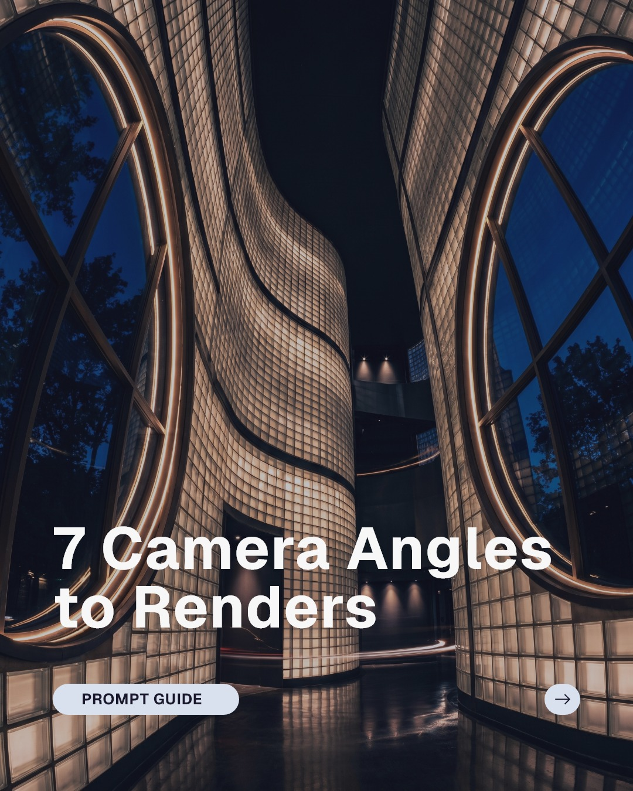
發布時間：2026-05-06 22:33:53
按讚：877 留言：1
7 Camera Angles for more cinematic architectural renders! Use these angles in your prompts to get more 'impressive architectural scenes.
Try on rendair.ai
直接開啟媒體（無廣告）
開啟 Instagram 原始貼文
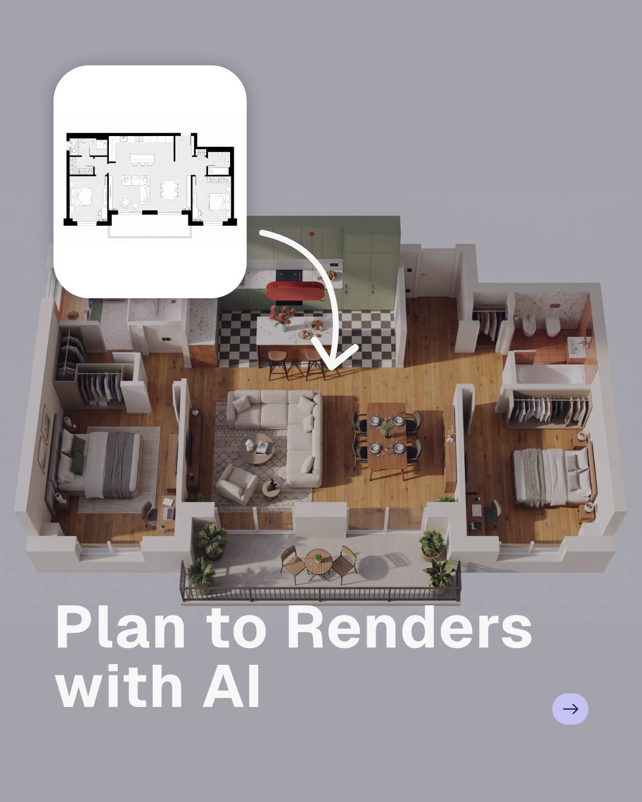
發布時間：2026-05-06 19:06:18
按讚：165 留言：25
From a floorplan… to full renders + animations in minutes.
No time to model everything? Same.
So I dropped the floorplan into Rendair.
→ Generated the full layout
→ Turned each space into room views
→ Brought it all to life with animations
All from one startin...
直接開啟媒體（無廣告）
開啟 Instagram 原始貼文
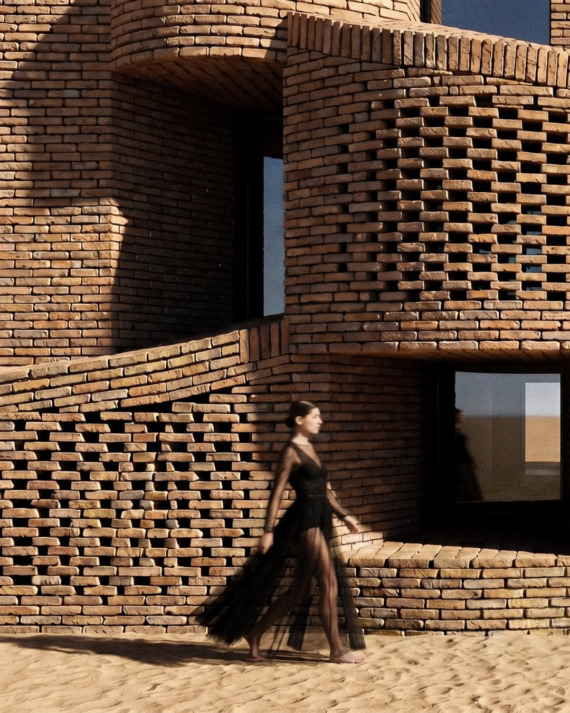
發布時間：2026-05-05 22:32:03
按讚：152 留言：0
A mystique and modern brick house in the desert. Enhance your visual story telling with ai.
Try on rendair.ai
直接開啟媒體（無廣告）
開啟 Instagram 原始貼文

發布時間：2026-05-05 18:55:14
按讚：37 留言：1
Renovating a street with AI.
From a car-focused road to a greener, more livable public space: trees, parking, better sidewalks, all in minutes.
Try it yourself → rendair.ai
Watch the full tutorial from the link on the first comment!
直接開啟媒體（無廣告）
開啟 Instagram 原始貼文
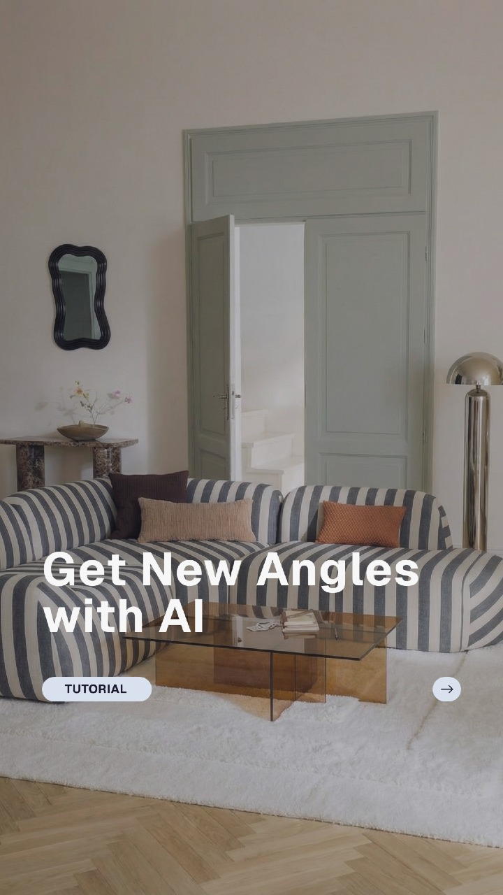
發布時間：2026-05-04 20:10:52
按讚：15 留言：1
Get Different Angles of a Room!
Just upload your room, and prompt to get views from above, right and left, then generate ✨
💬 Watch the full tutorial from the link on the first comments!
Try it yourself → rendair.ai
**Some reference and base images are from the...
直接開啟媒體（無廣告）
開啟 Instagram 原始貼文
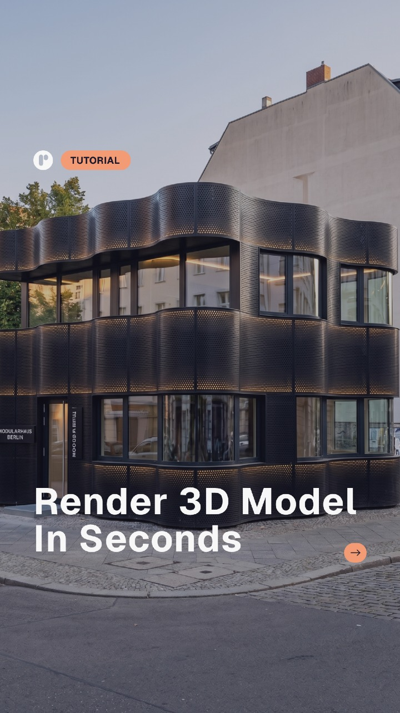
發布時間：2026-05-01 20:59:42
按讚：60 留言：2
Create dozens of different renders with just a simple 3D model! Watch the video to learn my pro tips and the prompts I used!
Try it yourself → rendair.ai
Watch the full tutorial from the link on the first comment!
直接開啟媒體（無廣告）
開啟 Instagram 原始貼文

發布時間：2026-05-01 00:06:54
按讚：4,184 留言：15
Where metallic rods meet fluid form. From concept to detail, explore the potential of creating diagrams and details with Rendair AI!
直接開啟媒體（無廣告）
開啟 Instagram 原始貼文

發布時間：2025-10-29 15:05:55
按讚：584 留言：864
D5極速素材庫 終於上架啦
任意留言送你免費d5模型
-
不小心走火入魔做了超過1300個d5傢俱模型
保證常見款式 且超夠用
後續每月更新材質庫
直到更新完所有類別 立即恢復原價
並附上約6篇材質模型小技巧教學影片
除了素材以外 還能學習到如何自製模型庫
如何自製多通道材質貼圖等等
希望讓大家能花更少的時間畫出更美的圖
就能有更多空檔去休息 去做自己想做的事
希望讓大家畫圖越來越方便🙌🏻
直接開啟媒體（無廣告）
開啟 Instagram 原始貼文

發布時間：2025-10-23 14:10:55
按讚：1,147 留言：1,872
#sketchup 必備外掛特輯又來了
這次是圓角神器 bevel!
是我使用率最高的一款工具
用在曲面天花 圓弧牆 座椅 都超直覺好用
下方任意留言 就送你這個bevel外掛試用檔
-
我也有sketchup高效曲面建模課
歡迎點選主頁連結 有免費課程試看喔！
直接開啟媒體（無廣告）
開啟 Instagram 原始貼文

發布時間：2025-09-25 13:37:48
按讚：577 留言：12
2025室內設計好用免費材質網
1.CC0 Tecture
2.Share Textures
3.Ambient CG
4.Poliigon
5.CGbookcase
6.TextureCan
直接開啟媒體（無廣告）
開啟 Instagram 原始貼文

發布時間：2025-08-21 15:32:01
按讚：2,804 留言：1,005
以下開放任意讚美我的工作空間
就送你10個辦公設備3D模型
-
以前都是幫別人畫出他們的夢想辦公室
接案6年我終於也有自己的小工作空間啦
這次以工作名義買了這些酷東西：
1. MOTTI Kiin升降桌 <a href="/profile/motti.tw/">@motti.tw</a>
2.MOTTI Vertti人體工學椅 <a href="/profile/motti.tw/">@motti.tw</a>
3.cybe...
直接開啟媒體（無廣告）
開啟 Instagram 原始貼文

發布時間：2025-07-31 16:39:48
按讚：449 留言：238
超久沒發圖文
教你如何用 #d5render 做野口勇的紙燈燈罩效果
主要在布藝模板
他有個很棒的功能是可以做半透明的布料
接著搭配法線貼圖給一張布紋
再放入點光源就好啦🙌🏻🙌🏻
隨便留言我送你紙燈模型跟法線貼圖
馬上就可以練習看看
-
更多D5教學 歡迎點擊主頁連結瞭解更多
直接開啟媒體（無廣告）
開啟 Instagram 原始貼文

發布時間：2025-07-30 15:38:14
按讚：1,013 留言：1,663
#sketchup 超萬能的材質替換外掛
搭配材質的時候不用再一個個點進去重新上色啦
使用這個超佛的免費外掛就能一秒替換材質
Material replacer
一樣隨意留言 就傳這個超好用工具rbz檔案給你
-
Sketchup高效曲面建模課
點擊主頁連結 觀看課程免費試看片段
db3drender.com
直接開啟媒體（無廣告）
開啟 Instagram 原始貼文

發布時間：2025-07-17 15:35:20
按讚：1,672 留言：2,242
（任意留言又來送東西惹）
這款2D轉3D的工具到底值不值得克金
沒錯 我直接買了會員給大家實測💸🥹
當你今天找不到客戶指定奇怪款式傢俱
Suapp外掛能直接把圖片轉3D skp模型
但實測下來
建議一定要一體成型的傢俱會是比較好的
他也會自動生成一個照片貼圖貼上去
但我建議都還是再去渲染器上色材質效果更真實
（但如果是比較多複合式材料的傢俱就不太適合）
Ai渲染功能 也都能後置調整並局部替換傢俱
正確設定後也能符合sketchup的模型形體不變形
-
在下方任意留言
我就送你我使用這款suapp生成的10個傢俱sk...
直接開啟媒體（無廣告）
開啟 Instagram 原始貼文

發布時間：2025-06-26 15:13:30
按讚：4,048 留言：2,734
#d5render
曲線燈帶是困擾最多人
也很多人詢問的
我不會再讓你一個個手動去旋轉排列那麼累了
我發現這個超好用的外掛工具
D5輔助工具箱
直接一秒照著你的線條排出燈帶
還能同步到d5視窗中！
-
下方任意留言
我馬上送給你這個好用工具外掛檔案
直接開啟媒體（無廣告）
開啟 Instagram 原始貼文

發布時間：2025-06-19 15:14:16
按讚：901 留言：6
#sketchup 一秒生成樓梯外掛
只要有樓梯的平面圖
都能一鍵enter幫你把所有樓梯踏步做出來
就連曲線車道 斜坡都可以做到
-
S4u make stair plugin
-
[sketchup高效曲面建模課］破600人購買
點選主頁瞭解更多
db3drender.com
直接開啟媒體（無廣告）
開啟 Instagram 原始貼文

發布時間：2025-03-27 16:51:39
按讚：639 留言：19
#sketchup 每次建模要用實心工具的時候
是不是一直跳出超討厭的視窗
說你的東西不是實體
快把你逼瘋
這時候 solid solver這個外掛
超簡單暴力
一秒解決
趕快裝起來
-
我是帶筆 立志成為設計師的3D工具人
D5超寫實渲染課
sketchup曲面建模
enscape電影級渲染
等等線上課程
歡迎有興趣點進課程官網瞭解更多喔！
直接開啟媒體（無廣告）
開啟 Instagram 原始貼文

發布時間：2025-03-08 17:24:50
按讚：235 留言：4
D5 Render 2.10超強更新
-
1.實時路徑追蹤
陰影加重 玻璃 反射材質更準確
材質紋理更細緻明顯
2.優化天氣系統
能做出大雨水霧 颱風天效果
3.自定義白天夜晚環境
增加月亮 銀河 星空背景
4.ai圖像後期
自帶動態模糊 直接免修圖
局部重繪功能
可以一秒替換 天空 人物 植物 水面
-
D5超寫實室內外課程 db3drender.com
開賣一週就破600位啦
這麼帥又好玩的渲染器 必須學起來
<a href="/profile/d5renderofficial/"&g...
直接開啟媒體（無廣告）
開啟 Instagram 原始貼文

發布時間：2025-02-21 16:00:48
按讚：717 留言：5
教你D5的攝影級構圖大法！
-
1.三分法構圖
D5右上角顯示-開啟構圖線
將畫面分成 橫向 縱向各劃分3等分
主角 重點物件（如單椅 沙發 面盆 花瓶）
放在這些線的交點上 使畫面有視覺引導
2.上帝視角構圖法
D5中切換到 透視視圖
緊貼天花板往下看畫面主角
並同時符合三分法交點原則
-
3.前景遮擋
在前方加入模糊的物件
讓視線自然聚焦到主體 創造景深。
模擬躲在後方的「偷窺感」
遮擋物都不超過1/3範圍
-
4.引導線構圖
利用 地板紋理、立面邊緣、天花板線條
將視線引導至畫面重點
地磚分割線 或 燈帶
可...
直接開啟媒體（無廣告）
開啟 Instagram 原始貼文

發布時間：2025-01-27 16:17:52
按讚：387 留言：4
Bangkok mahanakhon building
曼谷像素大廈
-
Modeling software: <a href="/profile/sketchup_official/">@sketchup_official</a>
Rendering software: <a href="/profile/d5renderofficial/">@d5renderofficial</a>
建築渲染也必須學起來！
#sketc...
直接開啟媒體（無廣告）
開啟 Instagram 原始貼文

發布時間：2025-01-16 12:48:43
按讚：487 留言：14
如果倫敦貝果店開在台灣的話
應該會長這樣
If London Bagel museum asked me to design their store in Taipei……
嘗試做出台灣的街景
電線桿、路燈、臨停的機車、紅線的馬路
還有偷偷放了一個打掃的車車
Modeling software: <a href="/profile/sketchup_official/">@sketchup_official</a>
Rendering software: <a h...
直接開啟媒體（無廣告）
開啟 Instagram 原始貼文

發布時間：2025-01-14 17:57:33
按讚：524 留言：20
Ader error店面3D設計
去年底去首爾獨旅
非常佩服ader error的店面設計
頹廢大膽再加上宇宙元素
所就想說自己來畫一間我心目中的分店
-
這間做成教材會不會學習意願提升🤣
-
If Ader error asked me to design their store…
#sketchup3d #d5render #renderbox #renderbook
直接開啟媒體（無廣告）
開啟 Instagram 原始貼文

發布時間：2025-01-07 14:09:33
按讚：721 留言：18
木質侘寂住家設計
已經很久沒畫到那麼喜歡的案子了
Design + rendering: <a href="/profile/db3d.render/">@db3d.render</a>
Modeling software: <a href="/profile/sketchup_official/">@sketchup_official</a>
Rendering software : <a href="/p...
直接開啟媒體（無廣告）
開啟 Instagram 原始貼文

發布時間：2024-12-30 16:02:08
按讚：1,180 留言：7
#ai
設計師2025年必須玩過的強化渲染圖AI工具
1.krea ai
Enhancer用來增強你的渲染圖質感
布料皺摺 或是光影材質不滿意的地方
都能讓你的圖大升級
2.Hailuo ai
讓你渲染圖直接動起來的ai網站
根據你的指令會生成出意想不到的動畫成果
也可以參考官網首頁的指令
貼在你的圖上生成
加入人、動物的效果最好
還很適合生成迷因
-
#sketchup #aiart #ai工具 #3d #室內設計 #室內設計裝潢 #室內設計師
直接開啟媒體（無廣告）
開啟 Instagram 原始貼文

發布時間：2024-12-27 20:22:01
按讚：408 留言：7
密閉微水泥浴室3D設計
Modeling software : <a href="/profile/sketchup_official/">@sketchup_official</a>
Rendering software : <a href="/profile/d5renderofficial/">@d5renderofficial</a>
你們開始玩d5了嗎
直接開啟媒體（無廣告）
開啟 Instagram 原始貼文

發布時間：2024-11-06 14:11:01
按讚：660 留言：5
Enscape必備外掛神器！
智達雲是款我用了很久的外掛集合器
1.能打包整個ens模型
更換設備 電腦路徑
不丟失參數 貼圖 用任何設定
2.超好用資產庫
我的enscape材質包就是使用這個功能
能保存所有凹凸法線反射貼圖
同時
你雜亂的skp模型也能直接導入
資產庫讀取模型也快速並自動生成預覽圖
畫圖更高效
3.常見外掛簡易版
有時候外掛到期或是出現bug不能使用
直接在智達雲搜尋
馬上能找到相對應的功能
使用方式都跟原本一樣
-
Enscape超好用700組材質包
請點選主頁連結
db3drender.co...
直接開啟媒體（無廣告）
開啟 Instagram 原始貼文

發布時間：2024-10-01 00:29:05
按讚：308 留言：12
暗黑石紋臥室
這堂案例要放進教材嗎
-
#sketchup #d5render
直接開啟媒體（無廣告）
開啟 Instagram 原始貼文

發布時間：2026-05-23 10:00:00
按讚：2,401 留言：22
Which architectural master guides your creative vision? 🏛️✨
At AIRILab, we believe that innovation in AI design starts with a deep appreciation for the pioneers of space. From Zaha Hadid’s fluid dynamism to Tadao Ando‘s mastery of light, and Mies van der Rohe’...
直接開啟媒體（無廣告）
開啟 Instagram 原始貼文
發布時間：2026-05-22 18:42:47
按讚：277 留言：3
Designing a City's Pulse: The Red Ribbon Riverwalk
Watch the full design showcase of the "Red Ribbon" Riverwalk—a conceptual project where we use AI to solve the problem of urban fragmentation.
In this video, we pull back the curtain on how AIRI...
直接開啟媒體（無廣告）
開啟 Instagram 原始貼文

發布時間：2026-05-22 10:10:22
按讚：3,566 留言：15
A single, continuous gesture weaving through the city. 🔴✨
Introducing "The Red Ribbon" — a conceptual urban vision created with AIRILab.
We set out to challenge the fragmentation of modern waterfronts by introducing a singular, fluid architectural ge...
直接開啟媒體（無廣告）
開啟 Instagram 原始貼文

發布時間：2026-05-21 10:38:02
按讚：466 留言：0
The beauty of urban planning lies in the details. This exploded axonometric site analysis is a testament to how we can break down complex data into legible, visual narratives.
By separating layers like land use, infrastructure, and urban growth, we gain a 360-...
直接開啟媒體（無廣告）
開啟 Instagram 原始貼文

發布時間：2026-05-20 10:37:14
按讚：627 留言：14
From Satellite to Masterplan Diagram. 🌍📐
Creating museum-quality urban planning diagrams usually requires hours of GIS data processing, AutoCAD drafting, and Illustrator refinement.
With AIRILab, you can generate architectural competition-ready masterplans wit...
直接開啟媒體（無廣告）
開啟 Instagram 原始貼文

發布時間：2026-05-19 10:14:42
按讚：1,045 留言：21
Urban planning is complex, and a single render rarely tells the whole story. To fully communicate a city district's potential, you need multiple layers of visualization.
Swipe through to explore the 6 essential presentation styles every urban designer nee...
直接開啟媒體（無廣告）
開啟 Instagram 原始貼文

發布時間：2026-05-18 10:10:37
按讚：60 留言：2
From satellite view to master plan in seconds. 🌍✨
Watch the magic of efficient urban analysis. At AIRILab, we're bridging the gap between raw geographical data and professional site diagrams using AI.
No more tedious tracing. Just input, analyze, and iter...
直接開啟媒體（無廣告）
開啟 Instagram 原始貼文

發布時間：2026-05-17 18:00:00
按讚：155 留言：0
Minimalist City Maps in Seconds. 🌍✨
From the winding Thames in London to the bustling grids of Shanghai, there is a unique beauty in the urban fabric. 🗺️
We generated this series of minimalist, gallery-worthy cartographic posters (London, Paris, Shanghai, Sing...
直接開啟媒體（無廣告）
開啟 Instagram 原始貼文
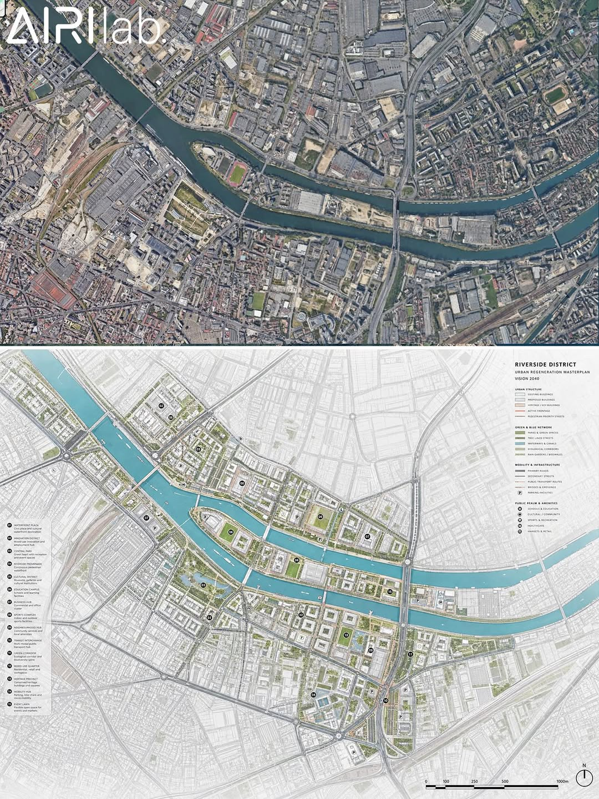
發布時間：2026-05-16 18:00:00
按讚：1,512 留言：9
Creating museum-quality urban planning diagrams usually requires hours of GIS data processing, AutoCAD drafting, and Illustrator refinement.
With AIRILab, you can generate architectural competition-ready masterplans with precise urban morphology and clean vect...
直接開啟媒體（無廣告）
開啟 Instagram 原始貼文
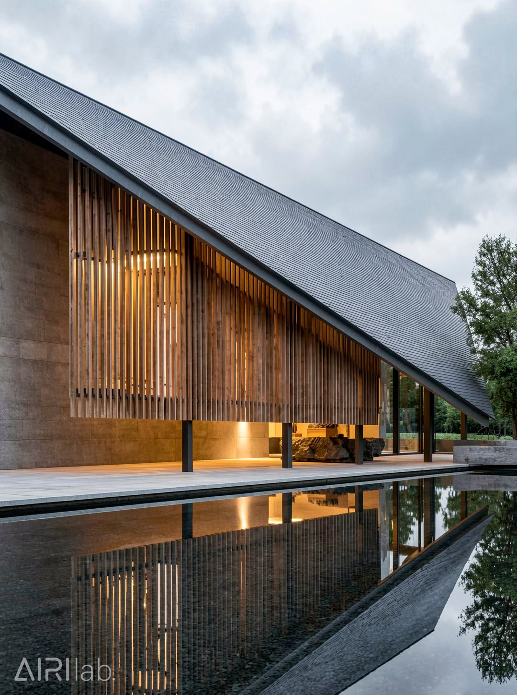
發布時間：2026-05-15 10:12:09
按讚：1,886 留言：5
Who says structural elements can't be the star of the show?
Explore the beauty of complex architectural geometry with these striking timber roof concepts. From sweeping parametric wood slats to intricate, interlocking timber matrices contrasting against m...
直接開啟媒體（無廣告）
開啟 Instagram 原始貼文

發布時間：2026-05-14 11:17:35
按讚：40 留言：0
Transforming an empty space into a fully curated living room has never been this effortless.
With AIRILab, your virtual staging process takes just a few clicks. Simply upload a photo of your empty room along with a collage of your favorite furniture pieces and...
直接開啟媒體（無廣告）
開啟 Instagram 原始貼文

發布時間：2026-05-13 15:20:04
按讚：23 留言：0
Why spend hours manually adjusting lighting and atmosphere when you can do it in seconds? 🏙️✨
At AIRIlab, we believe technology should empower creativity, not slow it down. Our latest AI-powered workflow allows architects and designers to transition seamlessly...
直接開啟媒體（無廣告）
開啟 Instagram 原始貼文

發布時間：2026-05-13 11:37:06
按讚：18 留言：0
The bridge between your design concept and final render? A well-curated moodboard.
At AIRILab, we don't just render images—we materialize your vision. By leveraging your specific palette of textures, stones, and fabrics, our AI instantly transforms simple...
直接開啟媒體（無廣告）
開啟 Instagram 原始貼文

發布時間：2026-05-12 10:32:07
按讚：48 留言：0
The secret to expensive-looking interiors? The perfect material combo. ✨
Elevating a space is all about how different textures, finishes, and tones interact. But visualizing that perfect combination shouldn't take hours of manual rendering.
With AIRILab&#...
直接開啟媒體（無廣告）
開啟 Instagram 原始貼文

發布時間：2026-05-10 12:45:00
按讚：10.5k 留言：8
Bridging the Gap: 2D Blueprints Meets 3D Realism with AIRIlab.
How can we elevate architectural presentation? At AIRIlab, we are redefining the section drawing.
This is more than just a rendering; it’s a tool for clear, compelling design communication. Whether...
直接開啟媒體（無廣告）
開啟 Instagram 原始貼文

發布時間：2026-05-09 17:52:38
按讚：606 留言：0
Elevate your architectural visualization in seconds. 🚀
We’ve optimized our workflow at AIRIlab to bridge the gap between simple massing models and high-end, editorial-quality renders. No more tedious post-production—our AI analyzes your structural logic, mater...
直接開啟媒體（無廣告）
開啟 Instagram 原始貼文

發布時間：2026-05-09 11:52:48
按讚：6,066 留言：7
From Digital Model to Built Reality
Great architecture begins as a digital model—a collection of geometry, light, and material logic. The true challenge, and the ultimate reward, lies in translating that precise vision into the physical world.
At AIRIlab, we v...
直接開啟媒體（無廣告）
開啟 Instagram 原始貼文

發布時間：2026-05-08 10:11:39
按讚：28 留言：0
At AIRIlab, we believe preservation isn't about keeping things static—it's about keeping them alive.
For our latest project, the "Cloud Pavilion," we challenged the boundaries of adaptive reuse. We treated the historic Jiangnan masonry shel...
直接開啟媒體（無廣告）
開啟 Instagram 原始貼文
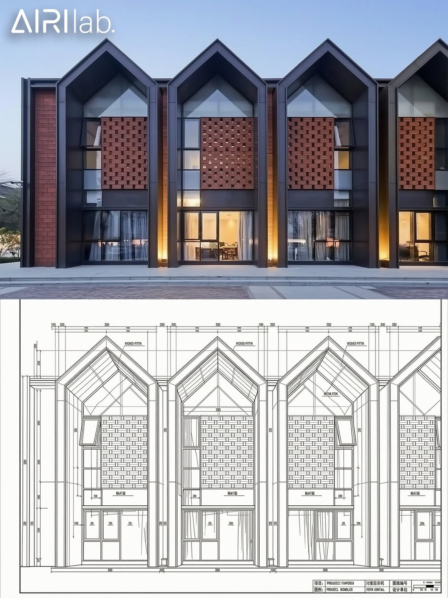
發布時間：2026-05-07 11:19:53
按讚：694 留言：1
From reality to professional CAD drawing—instantly.
Efficiency in architecture isn't just about rendering; it's about how quickly you can translate the world around you into precise, technical data.
AIRIlab is transforming the architectural workflow ...
直接開啟媒體（無廣告）
開啟 Instagram 原始貼文

發布時間：2026-05-06 14:21:26
按讚：63 留言：0
💡 Lighting Changes Everything
The same room can feel completely different with the right lighting. ✨
From flat brightness to warm layered ambience, great spaces are shaped by intentional light.
Created with AIRIlab — helping designers turn concepts into polish...
直接開啟媒體（無廣告）
開啟 Instagram 原始貼文

發布時間：2026-04-29 19:12:53
按讚：1,610 留言：9
Living Canvas
For this STF Visuals series, we explored how AI can innovate architectural visualisation, to move beyond realism and into atmosphere, treating Zaha Hadid’s flowing geometry as if it were built from layered brushstrokes, light, and plaster.
Publis...
直接開啟媒體（無廣告）
開啟 Instagram 原始貼文

發布時間：2026-04-27 19:47:39
按讚：10.9k 留言：74
The Continental Edge📍Austria
Uniquely perched between forested mountains above the lake, the resort is shaped as a series of calm, stepped volumes that follow the terrain and open toward the water and distant alpine horizon. Its contemporary architectural lang...
直接開啟媒體（無廣告）
開啟 Instagram 原始貼文
發布時間：2026-04-24 18:49:28
按讚：1,991 留言：21
Cailler Cacao Greenhouse📍Broc, Switzerland.
The cacao greenhouse is conceived as a key part of the visitor journey, immersing guests in a tropical environment where real cacao trees reveal the origins of chocolate. It links cultivation, transformation, and the...
直接開啟媒體（無廣告）
開啟 Instagram 原始貼文

發布時間：2026-04-23 20:37:58
按讚：73.4k 留言：778
The Limestone Retreat 📍Malta
A serene arrival space where pure architectural geometry is set against the raw permanence of natural limestone. Monolithic stone surfaces, filtered Mediterranean light, and restrained detailing create a lobby atmosphere that aims ...
直接開啟媒體（無廣告）
開啟 Instagram 原始貼文

發布時間：2026-03-27 01:52:16
按讚：1,727 留言：21
✨We are proud to share that the Parc du chocolat in Broc, Switzerland, has now entered public inquiry, with Studio Tim Fu serving as lead architect for the Cacao Greenhouse.
Over the past two years, we have worked on the cacao greenhouse as a key architectural...
直接開啟媒體（無廣告）
開啟 Instagram 原始貼文

發布時間：2026-03-21 02:33:57
按讚：8,873 留言：82
Introducing UrbanGPT 2.0 Beta
A major leap in AI-driven urban design.
UrbanGPT 2.0 moves beyond configurator logic by combining language models with diffusion-based creativity in a spatially calculated workflow.
The result is AI-generated urban layouts that ar...
直接開啟媒體（無廣告）
開啟 Instagram 原始貼文

發布時間：2026-02-28 23:32:50
按讚：3,385 留言：33
a 45-floor luxurious office tower and retail podium in the heart of London.
Designed and rendered with Al-integrated workflow.
Unveiled from client work pipeline.
直接開啟媒體（無廣告）
開啟 Instagram 原始貼文

發布時間：2026-02-16 23:07:12
按讚：1,669 留言：44
The Crownline Tower
a 45-floor luxurious office tower and retail podium in the heart of London.
Designed and rendered with AI-integrated workflow.
Unveiled from client work pipeline.
直接開啟媒體（無廣告）
開啟 Instagram 原始貼文
發布時間：2026-02-13 17:00:00
按讚：5,382 留言：58
The Crownline Tower
Luxurious 45-floor office tower and retail podium in London.
Unveiled from client work pipeline.
直接開啟媒體（無廣告）
開啟 Instagram 原始貼文

發布時間：2026-01-27 20:56:40
按讚：1,147 留言：8
When creation becomes frictionless, the value moves elsewhere. Into intent, interpretation, and presence.
#Shanshui in Motion is an interactive installation by Studio Tim Fu that reimagines traditional Chinese landscape painting as an immersive, responsive exp...
直接開啟媒體（無廣告）
開啟 Instagram 原始貼文

發布時間：2026-01-12 21:11:08
按讚：540 留言：1
“Gaudí: Back to the Origins” is now open. The exhibition presents an interactive installation that connects physical form-finding with real-time computation.
Visitors can manipulate physical and digital funicular models and see the results rendered live throug...
直接開啟媒體（無廣告）
開啟 Instagram 原始貼文

發布時間：2026-01-08 21:03:00
按讚：2,283 留言：12
We’re excited to share a new partnership (<a href="/profile/gaudifoundation/">@gaudifoundation</a> and <a href="/profile/studiotimfu/">@studiotimfu</a> ), focused on turning
Gaudi’s method into a living platform for...
直接開啟媒體（無廣告）
開啟 Instagram 原始貼文
發布時間：2026-01-06 01:52:22
按讚：152 留言：14
We’re proud to recognise Elahe Mahani as the first STF Talent Support Program recipient.
Elahe’s story:
Iran, her home country, is currently under severe economic pressure. The rial has hit record low following inflation, which has made international financial...
直接開啟媒體（無廣告）
開啟 Instagram 原始貼文

發布時間：2025-12-20 21:17:06
按讚：534 留言：7
Internal Tool Reveal: STF Gradient Stylizer
As architects, we often think in gradients and seek harmony through the act of balance. The Gradient Stylizer is an AI-powered tool developed to fulfil that need.
Part of our showcase of internal toolsets developed t...
直接開啟媒體（無廣告）
開啟 Instagram 原始貼文

發布時間：2025-12-16 00:30:45
按讚：4,455 留言：63
Internal Tool Reveal: STF Renderer
A much needed tool for the post-AI pipeline, you can upload AI visuals and imagine alternate views with full control at breakneck speed, edit weather, people, and other parameters
Part of our showcase of AI-powered internal t...
直接開啟媒體（無廣告）
開啟 Instagram 原始貼文

發布時間：2025-12-05 23:01:04
按讚：795 留言：33
Internal Tool Reveal: STF Interiors
We are showcasing some of our AI-powered internal toolsets developed to superpower our daily rapid design and visualisation services.
STF Interiors lets you upload interior renders or photos, swap in furniture from your exis...
直接開啟媒體（無廣告）
開啟 Instagram 原始貼文

發布時間：2025-11-23 03:40:06
按讚： 留言：73
MOON by <a href="/profile/manoloark/">@manoloark</a>
• New Project
• Location - VILAMOURA- ALGARVE - PORTUGAL
• Bioarchitecture by <a href="/profile/manoloark/">@manoloark</a>
— BE ARK —
直接開啟媒體（無廣告）
開啟 Instagram 原始貼文

發布時間：2025-11-13 21:37:55
按讚：341 留言：8
Proud to have our practice featured at <a href="/profile/riba/">@riba</a> Guerrilla Tactics 2025!
The theme focused on how small studios define their identity, sharpen their craft, and communicate what makes them distinct. Grateful to co...
直接開啟媒體（無廣告）
開啟 Instagram 原始貼文

發布時間：2025-11-01 00:07:38
按讚：168 留言：30
Archi-Tech Tour EP 20 | Studio Tim Fu – The AI Architect
We step inside <a href="/profile/studiotimfu/">@studiotimfu</a> Tim Fu to explore how AI, computation, and digital craftsmanship are redefining the way architecture is imagined and...
直接開啟媒體（無廣告）
開啟 Instagram 原始貼文

發布時間：2025-10-31 22:38:00
按讚：580 留言：10
Chromatic Chambers
直接開啟媒體（無廣告）
開啟 Instagram 原始貼文

發布時間：2026-04-15 13:47:35
按讚：1,336 留言：2,066
Comment 'Render' for the access link 🔥
What if one drawing could have 16 different looks… instantly? 🎨
With Bildigo, you can switch between 16+ rendering styles with just one click ⚡
No reworking, no starting over, just tap and completely transform y...
直接開啟媒體（無廣告）
開啟 Instagram 原始貼文

發布時間：2026-04-16 18:03:39
按讚： 留言：270
Comment 'Plan' to access the Floor Plan Rendering Masterclass with Nano Banana 🔥
Everyone’s using AI… but why does everything still look the same? 🤔
We’ve got tools that can generate any rendering style…
yet most floor plans online feel copy-pasted. ...
直接開啟媒體（無廣告）
開啟 Instagram 原始貼文

發布時間：2026-04-17 12:43:38
按讚：774 留言：209
Rendering floor plans doesn’t have to take hours anymore ⏳
What used to be a long, repetitive process…
can now be done in minutes with multiple styles, cleaner outputs, and way more flexibility. 🎨
We've broken down the workflow of Bildigo and how it actua...
直接開啟媒體（無廣告）
開啟 Instagram 原始貼文

發布時間：2026-04-12 13:28:46
按讚：467 留言：133
Comment 'Model' for the access link and full video 📹
Exploring a workflow where a simple concept sketch transforms into a 3D model. 🏢
The idea? To move beyond just 2D and start designing, visualising, and testing directly in 3D. Place your model on t...
直接開啟媒體（無廣告）
開啟 Instagram 原始貼文

發布時間：2026-03-28 21:37:27
按讚：2,219 留言：998
Comment 'Model' for the access link, prompts and a detailed video 📹
The best results don’t come from a single tool, they come from combining workflows intelligently.
In this experiment, we extracted multiple elevations of the Centre Pompidou and fed ...
直接開啟媒體（無廣告）
開啟 Instagram 原始貼文

發布時間：2026-03-24 22:15:56
按讚： 留言：107
Comment “Model” to try it out now! 🪑
I’ve been experimenting with AI Image → 3D tools lately, and this one was created using Hitem3D. Honestly, didn’t expect it to turn out this usable.
We’ve shared a full breakdown on YouTube where I test it across different ...
直接開啟媒體（無廣告）
開啟 Instagram 原始貼文

發布時間：2026-03-10 21:28:27
按讚：771 留言：384
Comment 'Render' for the download link and full tutorial 🔑
If you're wondering which render tool to pick this year, without any complicated setups or learning curve, D5 might be the ideal choice. And in the latest version 3.0, they've integ...
直接開啟媒體（無廣告）
開啟 Instagram 原始貼文

發布時間：2026-03-01 22:09:18
按讚： 留言：156
Comment 'Render' for full tutorial and free download link to D5 🤯🔥
This project is part of our D5 3.0 review on YouTube. The new features on D5 are on another level, an intersection of traditional visualisation workflow and practical integration of A...
直接開啟媒體（無廣告）
開啟 Instagram 原始貼文

發布時間：2026-02-28 22:41:02
按讚： 留言：225
Comment 'Nano' to watch the full review of the new version Nano Banana 2 🤯
This new update brings Pro-level intelligence with Flash-level speed — which basically means faster iterations, cleaner text inside images (finally!), and much better visual c...
直接開啟媒體（無廣告）
開啟 Instagram 原始貼文

發布時間：2026-02-10 21:58:44
按讚：552 留言：161
Comment 'D5' for the full tutorial and access link 📹
The latest version of D5 3.0 comes with a game changing plugin called D5 Lite. This allows users to render a Sketchup scene directly within the modelling software without even opening D5 Render 🤯
Y...
直接開啟媒體（無廣告）
開啟 Instagram 原始貼文

發布時間：2026-02-03 22:00:09
按讚：695 留言：186
Comment 'Render' to watch the full process and access link 📹
Walkthroughs created in D5 Render 3.0 for our full YouTube tutorial. 🚀
Hyper-realistic renders and smooth walkthroughs are now insanely easy to achieve, even if you’re a beginner.
D5 3.0’s ...
直接開啟媒體（無廣告）
開啟 Instagram 原始貼文

發布時間：2026-02-02 19:06:17
按讚： 留言：82
Comment 'Render' for the access link and full walkthrough 📹✨
Just got my hands on D5 3.0 and it's no longer just a renderer. It’s a complete end-to-end visualization workflow.
Model in SketchUp with real-time updates using D5 Lite, drop in produ...
直接開啟媒體（無廣告）
開啟 Instagram 原始貼文

發布時間：2026-01-22 23:40:06
按讚：2,464 留言：615
Follow and comment “Street” to get the full process + prompts ✨
Elevations from various streetscapes in India created using Google Earth × Nano Banana Pro 🌍🖋️
I've tried capturing the richness, density, and contextual complexity of India’s urban fabric wi...
直接開啟媒體（無廣告）
開啟 Instagram 原始貼文

發布時間：2025-12-31 19:47:56
按讚：3,668 留言：1,228
Follow and comment “Diagram” to watch the full process on YouTube ✨
We know that Nano Banana Pro has excellent diagrammatic understanding. How well can it benefit architects and designers? 🖋️
In our latest YouTube video, we take a look at a few use cases to pr...
直接開啟媒體（無廣告）
開啟 Instagram 原始貼文

發布時間：2025-12-28 00:26:45
按讚：1,979 留言：126
Between work, pressure, and precision, don’t forget the joy that started it all. ✨
Buy something that reconnects you to that feeling.
Gift the child in you. 🎁
Comment 'Link' for this on Amazon 🔗
Follow <a href="/profile/salmaan.arch/">...
直接開啟媒體（無廣告）
開啟 Instagram 原始貼文

發布時間：2025-12-27 19:58:15
按讚：6,767 留言：3,373
Follow and comment “Street” to get the full process + prompts ✨
Street elevations from around the world created using Google Earth × Nano Banana Pro 🌍🖋️
In our latest YouTube video, we break down how to extract visual cues from Google Earth screenshots and tur...
直接開啟媒體（無廣告）
開啟 Instagram 原始貼文

發布時間：2025-12-25 20:29:18
按讚：2,205 留言：2,333
Comment 'Earth' for the prompts and full video tutorial 📹 🔥
Save this for you next site study 📙
Turning Google Earth screenshots into clean vector drawings is now effortless with Nano Banana Pro.
From site outlines and road networks to editable vecto...
直接開啟媒體（無廣告）
開啟 Instagram 原始貼文

發布時間：2025-12-20 19:15:53
按讚：9,530 留言：256
Another year doesn’t change your career.
Your decisions do. 💪🏻
If you’ve been doing the same tasks, for the same growth, year after year, it’s not a lack of talent. It’s a lack of exposure to how the industry really works today.
Architecture is evolving.
Your ...
直接開啟媒體（無廣告）
開啟 Instagram 原始貼文

發布時間：2025-12-15 20:41:20
按讚： 留言：93
Comment 'Send' to receive the links to the channels. Make sure to follow <a href="/profile/salmaan.arch/">@salmaan.arch</a> 🔗
These channels are truly unique in their own way and give you a unique perspective about architectura...
直接開啟媒體（無廣告）
開啟 Instagram 原始貼文

發布時間：2025-12-14 13:38:38
按讚：24.0k 留言：196
Comment 'Tree' to download these as FREE PNG files to use in your projects and illustrations 🎄
Ever wondered how a Christmas tree would look in different architecture styles? Here's the result! 😁 🎄
Which one do you like the most? 🌟
Share with so...
直接開啟媒體（無廣告）
開啟 Instagram 原始貼文

發布時間：2026-05-23 02:34:09
按讚：1,630 留言：0
Follow <a href="/profile/urbandesignlab.in/">@urbandesignlab.in</a>
.
.
𝗨𝗗𝗟 𝗜𝗻𝗗𝗲𝘀𝗶𝗴𝗻 𝗠𝗮𝘀𝘁𝗲𝗿𝗰𝗹𝗮𝘀𝘀
𝗟𝗲𝗮𝗿𝗻 𝘁𝗼 𝗗𝗲𝘀𝗶𝗴𝗻 𝗣𝗼𝗿𝘁𝗳𝗼𝗹𝗶𝗼𝘀, 𝗣𝘂𝗯𝗹𝗶𝗰𝗮𝘁𝗶𝗼𝗻𝘀, 𝗮𝗻𝗱 𝗣𝗿𝗲𝘀𝗲𝗻𝘁𝗮𝘁𝗶𝗼𝗻 𝗕𝗼𝗮𝗿𝗱𝘀
𝐒𝐞𝐬𝐬𝐢𝐨𝐧 𝐃𝐞𝐭𝐚𝐢𝐥𝐬: 𝟯𝟬𝘁𝗵 𝐌𝐚𝐲, 𝟐𝟎𝟐𝟔
Registration link in bio
Limited seats are...
直接開啟媒體（無廣告）
開啟 Instagram 原始貼文

發布時間：2026-05-22 23:49:03
按讚： 留言：9
Follow <a href="/profile/urbandesignlab.in/">@urbandesignlab.in</a>
Planning a Master’s in Architecture, Urban Design, Planning, Landscape, Sustainability, Computational Design, or Design Research in Europe requires more than choosing a ...
直接開啟媒體（無廣告）
開啟 Instagram 原始貼文
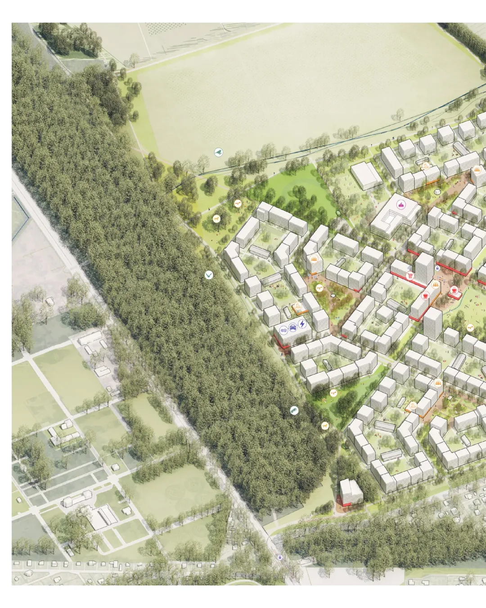
發布時間：2026-05-21 14:40:25
按讚： 留言：0
Follow <a href="/profile/urbandesignlab.in/">@urbandesignlab.in</a>
Elisabeth-Aue proposes a landscape-led mixed urban quarter in Berlin, where housing, workspaces, public life, and ecological systems are organized around blue-green corr...
直接開啟媒體（無廣告）
開啟 Instagram 原始貼文
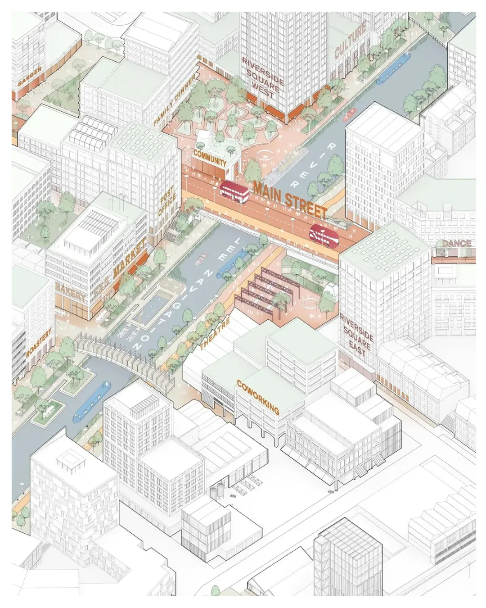
發布時間：2026-05-20 14:15:30
按讚：1,792 留言：2
Follow <a href="/profile/urbandesignlab.in/">@urbandesignlab.in</a>
Meridian Water reimagines regeneration as a network of walkable micro-neighbourhoods shaped by landscape, waterways, industrial heritage, and everyday public life.
Set w...
直接開啟媒體（無廣告）
開啟 Instagram 原始貼文
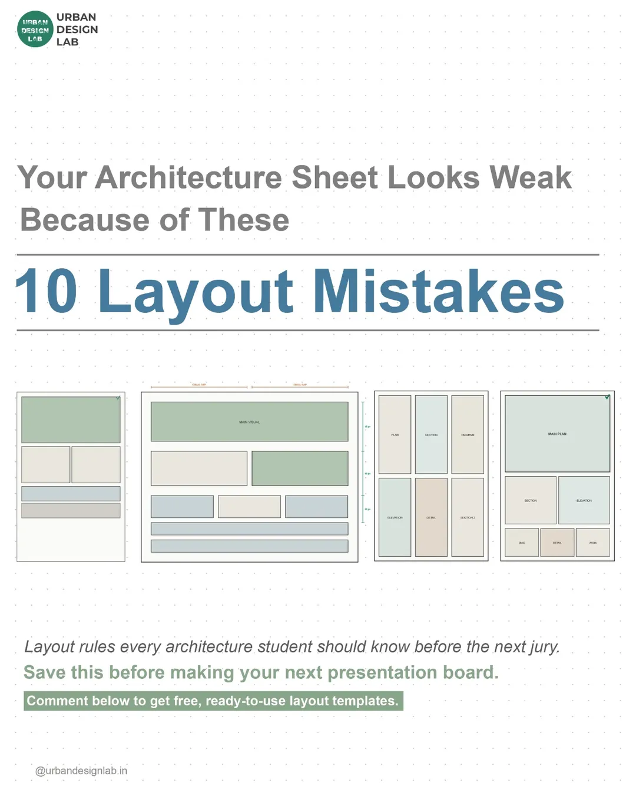
發布時間：2026-05-19 22:27:50
按讚： 留言：62
Follow <a href="/profile/urbandesignlab.in/">@urbandesignlab.in</a>
Strong drawings can lose their impact when the sheet layout is weak.
A clear architecture presentation board is not about filling every corner. It is about building hier...
直接開啟媒體（無廣告）
開啟 Instagram 原始貼文

發布時間：2026-05-19 18:39:46
按讚：1,231 留言：0
Follow <a href="/profile/urbandesignlab.in/">@urbandesignlab.in</a>
A regenerative waterfront landscape that reimagines Melbourne’s Dockland Piers through wetland memory, modular ecology, and community gathering.
“Drift & Bloom” resp...
直接開啟媒體（無廣告）
開啟 Instagram 原始貼文

發布時間：2026-05-18 23:29:33
按讚： 留言：157
Follow <a href="/profile/urbandesignlab.in/">@urbandesignlab.in</a>
Architecture presentation boards should do more than display drawings. They should communicate design intent with clarity, hierarchy, and visual confidence.
Get free acc...
直接開啟媒體（無廣告）
開啟 Instagram 原始貼文
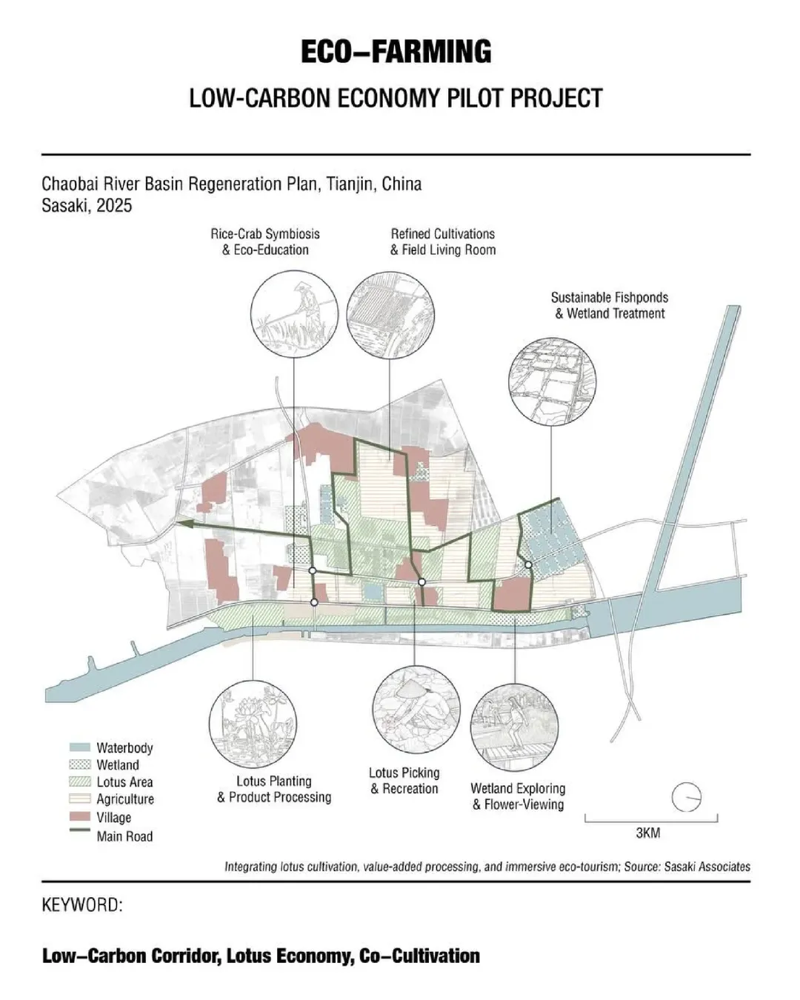
發布時間：2026-05-18 19:57:11
按讚： 留言：0
Follow <a href="/profile/urbandesignlab.in/">@urbandesignlab.in</a>
A studio exercise that uses case analysis as a critical tool for understanding landscape design strategies, representation methods, and urban futures.
As part of MLA LAN...
直接開啟媒體（無廣告）
開啟 Instagram 原始貼文

發布時間：2026-05-16 21:28:33
按讚：1,905 留言：0
Follow <a href="/profile/urbandesignlab.in/">@urbandesignlab.in</a>
A foundation design studio exploring landscape as a living system of movement, encounter, and transformation.
HKU Landscape PDLA LAND 7138 Foundation Design Studio I: “D...
直接開啟媒體（無廣告）
開啟 Instagram 原始貼文

發布時間：2026-05-16 01:14:47
按讚：2,774 留言：1
Follow <a href="/profile/urbandesignlab.in/">@urbandesignlab.in</a>
A cultural center rooted in Khmer identity, community memory, and the landscape of Kampong Kdei.
The Kampong Kdei Cultural Center reinterprets local heritage through bui...
直接開啟媒體（無廣告）
開啟 Instagram 原始貼文
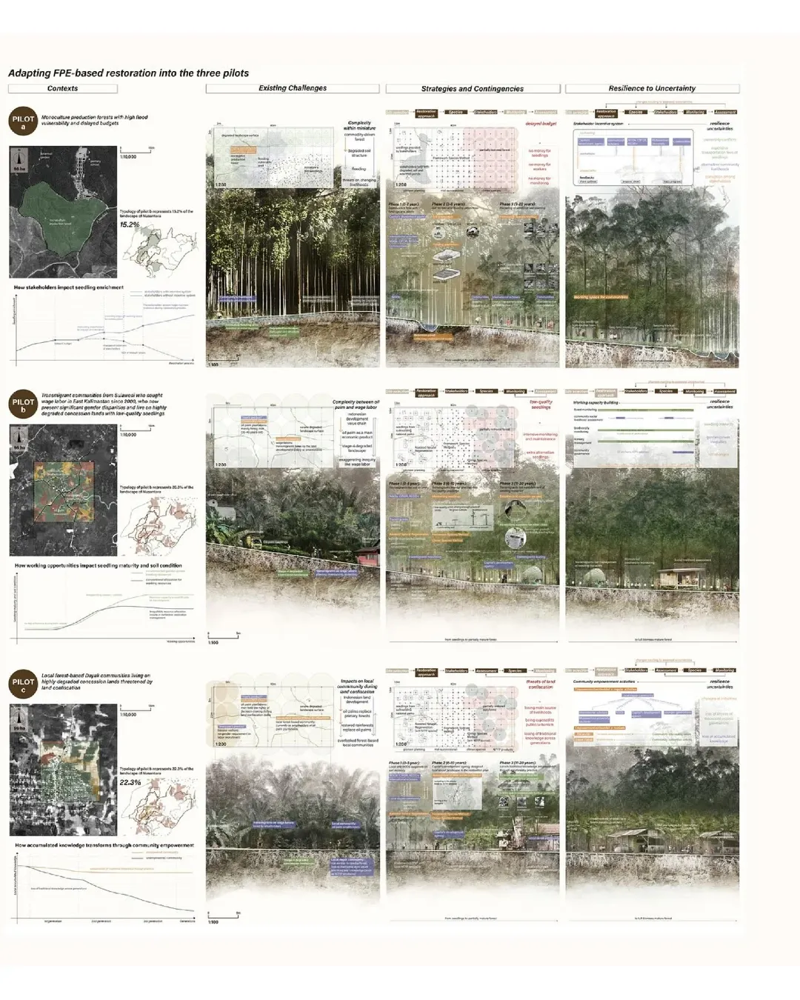
發布時間：2026-05-14 23:46:31
按讚： 留言：0
Follow <a href="/profile/urbandesignlab.in/">@urbandesignlab.in</a>
A thesis that reframes forest restoration as a political, ecological, and social process, not just a measurable environmental outcome.
This HKU Landscape thesis examines...
直接開啟媒體（無廣告）
開啟 Instagram 原始貼文

發布時間：2026-05-14 13:55:01
按讚：1,528 留言：1
Follow <a href="/profile/urbandesignlab.in/">@urbandesignlab.in</a>
A walkable town centre vision for St Marys, shaped through pedestrian networks, fine-grain blocks, blue-green corridors, and community-focused public life.
This urban de...
直接開啟媒體（無廣告）
開啟 Instagram 原始貼文

發布時間：2026-05-13 21:57:13
按讚： 留言：1
Follow <a href="/profile/urbandesignlab.in/">@urbandesignlab.in</a>
A critical architecture thesis questioning the single-family house as a spatial model shaped by labour, gender, family structures, and social reproduction.
“Village for ...
直接開啟媒體（無廣告）
開啟 Instagram 原始貼文

發布時間：2026-05-13 02:05:26
按讚： 留言：0
Follow <a href="/profile/urbandesignlab.in/">@urbandesignlab.in</a>
Your thesis deserves to move beyond the final jury and enter a wider global conversation on cities, landscapes, architecture, planning, and the future of the built envir...
直接開啟媒體（無廣告）
開啟 Instagram 原始貼文

發布時間：2026-05-12 22:30:20
按讚：1,908 留言：11
Follow <a href="/profile/urbandesignlab.in/">@urbandesignlab.in</a>
What tourists see is often the postcard.
What residents live with is often the pressure behind it.
Beaches, riverfronts, heritage districts, markets, old towns, and wate...
直接開啟媒體（無廣告）
開啟 Instagram 原始貼文

發布時間：2026-05-12 21:11:00
按讚： 留言：3
Did you know that in Japan, architecture often begins with a masterpiece small enough to hold in your hands?
Before a project takes shape on site, detailed miniature models are created to bring the entire vision to life. These models are not just about showing...
直接開啟媒體（無廣告）
開啟 Instagram 原始貼文

發布時間：2026-05-12 20:16:03
按讚： 留言：1
Follow <a href="/profile/urbandesignlab.in/">@urbandesignlab.in</a>
A flood-resilient town centre vision that reconnects Rydalmere with Parramatta River through ecology, mobility, and adaptive urban transformation.
“Rydalmere Rivulets” r...
直接開啟媒體（無廣告）
開啟 Instagram 原始貼文
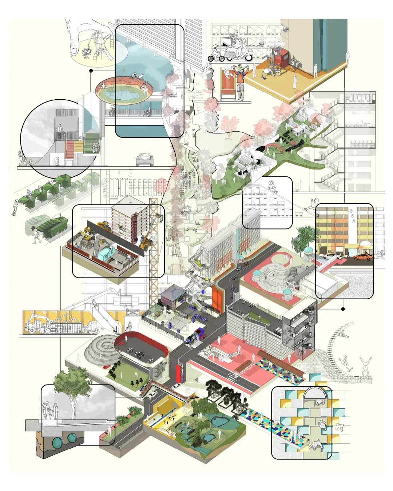
發布時間：2026-05-11 22:35:48
按讚： 留言：1
Follow <a href="/profile/urbandesignlab.in/">@urbandesignlab.in</a>
A speculative architecture thesis that turns play into a critical lens for reading resilience, identity, ageing, and social expectation in Singapore.
“PLAY! A Guide to A...
直接開啟媒體（無廣告）
開啟 Instagram 原始貼文

發布時間：2026-05-11 13:39:27
按讚： 留言：0
Follow <a href="/profile/urbandesignlab.in/">@urbandesignlab.in</a>
A speculative architecture thesis that turns play into a critical lens for reading resilience, identity, ageing, and social expectation in Singapore.
“PLAY! A Guide to A...
直接開啟媒體（無廣告）
開啟 Instagram 原始貼文
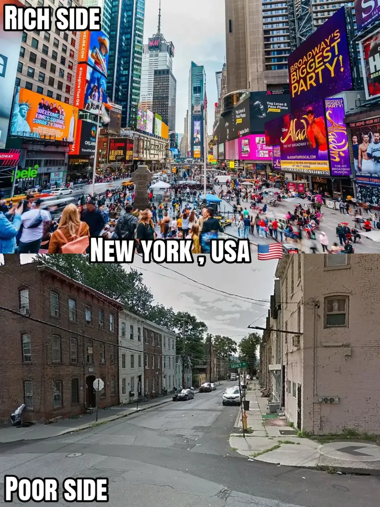
發布時間：2026-05-09 13:43:08
按讚：65.5k 留言：1,658
One city. Two realities.
Glass towers, global skylines, luxury districts, and world-class infrastructure on one side.
Informal housing, fragile settlements, overcrowded streets, and everyday survival on the other.
These images are not just about “rich vs poor....
直接開啟媒體（無廣告）
開啟 Instagram 原始貼文
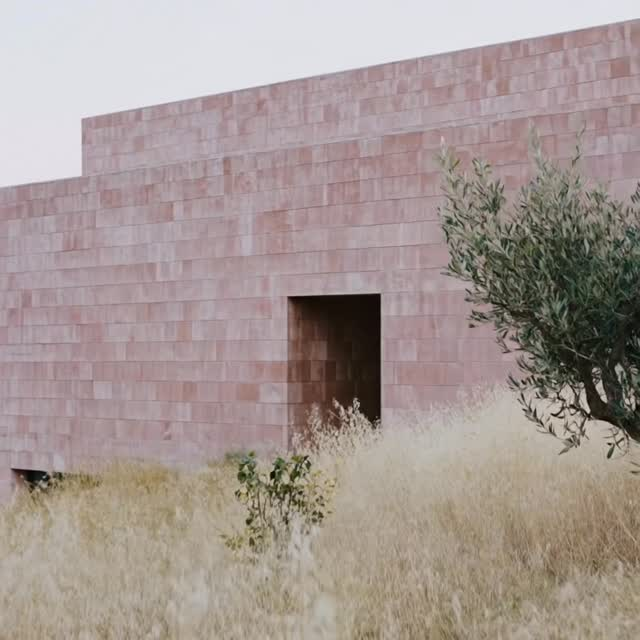
發布時間：2026-05-10 15:32:36
按讚：297 留言：4
🌾
#ai #architecture #aiarchitecture #design
直接開啟媒體（無廣告）
開啟 Instagram 原始貼文

發布時間：2026-05-06 16:41:59
按讚：3,032 留言：1,085
Holding another free workshop next week (Thursday 14 May) with the one and only <a href="/profile/gproud1/">@gproud1</a> going through all the latest updates released in Gendo and listening to questions and suggestions you might have!
Co...
直接開啟媒體（無廣告）
開啟 Instagram 原始貼文

發布時間：2026-05-05 15:06:26
按讚：237 留言：0
infinite edits with zero image degradation using the newly released edit tool in Gendo! 🔳
example here showing 18 consecutive edits on the same image, but could have gone for more
#ai #aiarchitecture #architecture #design #gendo
直接開啟媒體（無廣告）
開啟 Instagram 原始貼文

發布時間：2026-05-04 16:58:03
按讚：73 留言：1
🐝
#ai #architecture #aiarchitecture #design
直接開啟媒體（無廣告）
開啟 Instagram 原始貼文

發布時間：2026-05-03 17:06:18
按讚：100 留言：2
🔳
#ai #architecture #aiarchitecture #design
直接開啟媒體（無廣告）
開啟 Instagram 原始貼文

發布時間：2026-05-02 17:22:19
按讚：121 留言：0
⚡️
#ai #architecture #aiarchitecture #design
直接開啟媒體（無廣告）
開啟 Instagram 原始貼文

發布時間：2026-05-01 14:15:13
按讚：213 留言：4
👗
#ai #architecture #aiarchitecture #design
直接開啟媒體（無廣告）
開啟 Instagram 原始貼文

發布時間：2026-04-30 14:18:39
按讚：167 留言：2
🐋
#ai #aiarchitecture #architecture #design
直接開啟媒體（無廣告）
開啟 Instagram 原始貼文

發布時間：2026-04-29 15:10:05
按讚：185 留言：0
🧱
#ai #aiarchitecture #architecture #design
直接開啟媒體（無廣告）
開啟 Instagram 原始貼文

發布時間：2026-04-28 15:05:24
按讚：400 留言：2
🐎
#ai #aiarchitecture #architecture #design
直接開啟媒體（無廣告）
開啟 Instagram 原始貼文

發布時間：2026-04-27 23:55:14
按讚：186 留言：0
🦌
#architecture #design
直接開啟媒體（無廣告）
開啟 Instagram 原始貼文

發布時間：2026-04-22 15:40:39
按讚：150 留言：2
four
#ai #aiarchitecture #architecture #design
直接開啟媒體（無廣告）
開啟 Instagram 原始貼文

發布時間：2026-04-20 17:28:45
按讚：84 留言：175
THIS WEEKEND we are hosting our first hackathon-style design competition series GENDO 48 with a chance to win £5,000! 💸
Comment “GENDO 48” below for link to early free registration. 👇🏽
The idea behind GENDO 48 is having the platform completely unlocked during ...
直接開啟媒體（無廣告）
開啟 Instagram 原始貼文
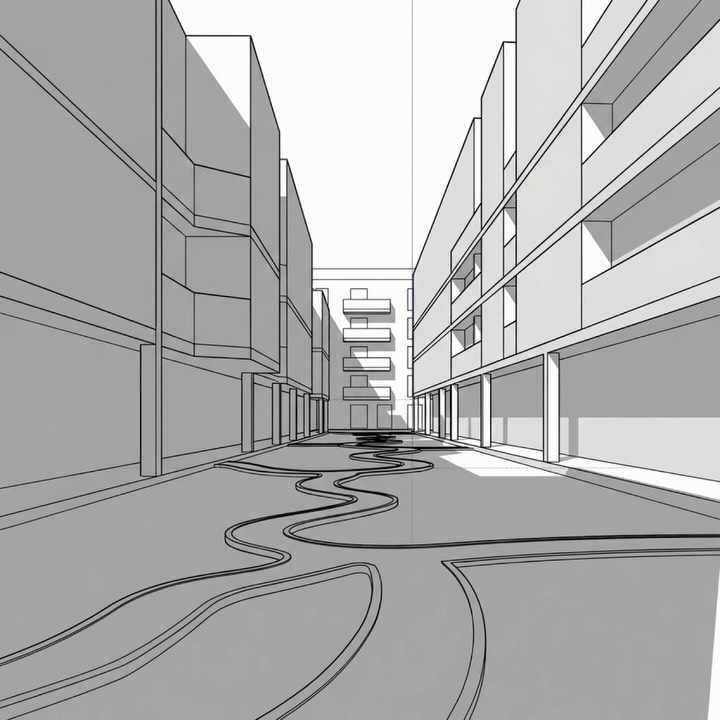
發布時間：2026-04-15 23:02:26
按讚：319 留言：342
really excited for tomorrow’s free workshop with <a href="/profile/architech.network/">@architech.network</a> and <a href="/profile/gendo.ai/">@gendo.ai</a> 🎉
comment “workshop” below if you still haven’t registere...
直接開啟媒體（無廣告）
開啟 Instagram 原始貼文

發布時間：2026-04-13 18:25:51
按讚：599 留言：126
Comment "CHALLENGE" to enter the competition ✨
Early-bird registration ending soon!
<a href="/profile/archi.best/">@archi.best</a> invites architects and designers from around the world to participate in the Vernacular AI Archi...
直接開啟媒體（無廣告）
開啟 Instagram 原始貼文

發布時間：2026-04-07 20:12:30
按讚：195 留言：5
underrated feature in gendo is the enhance realism button that basically takes any image as input and tries to make it realistically coherent and photographic. works really well with collaged images and things you place on your image that do not make real sens...
直接開啟媒體（無廣告）
開啟 Instagram 原始貼文
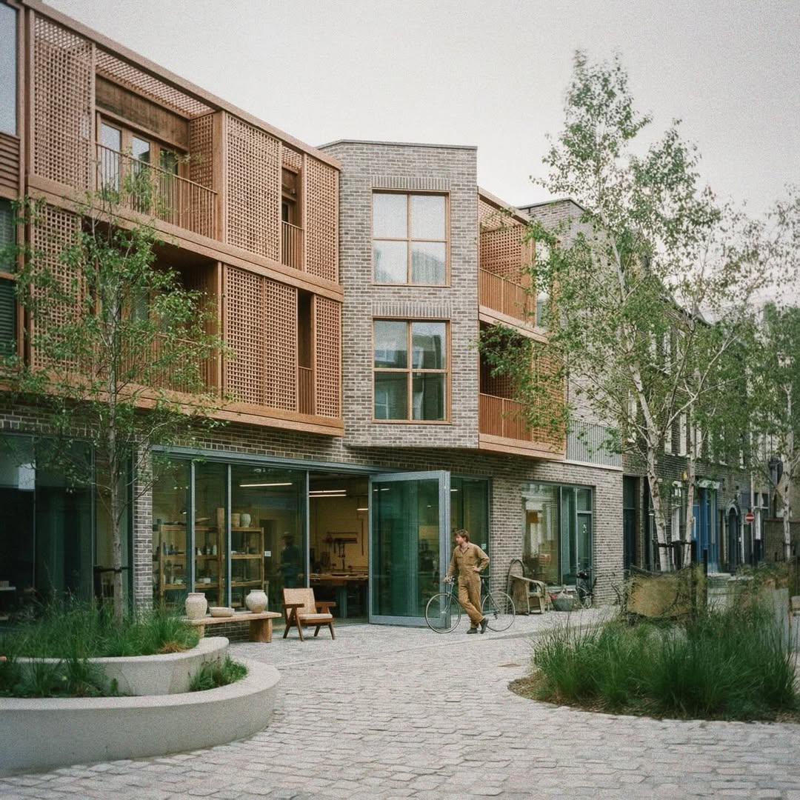
發布時間：2026-04-05 00:28:49
按讚：844 留言：16
open workshop
#ai #aiarchitecture #architecture #design
直接開啟媒體（無廣告）
開啟 Instagram 原始貼文

發布時間：2026-03-29 01:06:34
按讚：192 留言：1
origins
#ai #photography
直接開啟媒體（無廣告）
開啟 Instagram 原始貼文
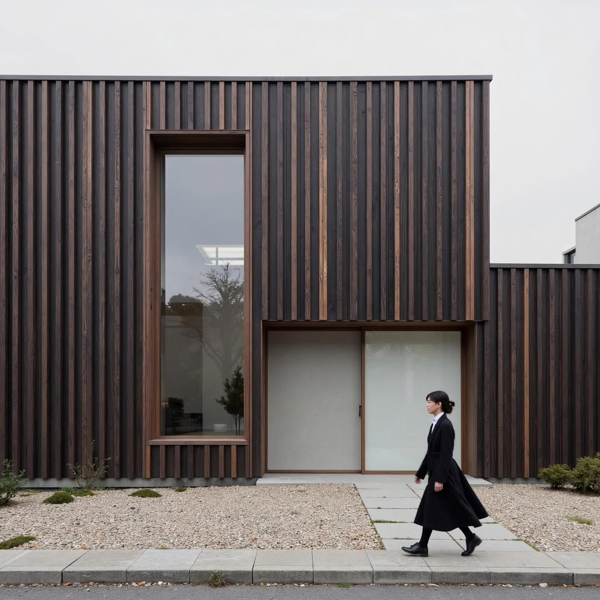
發布時間：2026-03-26 18:57:26
按讚：754 留言：16
mono minimal lith
#ai #aiarchitecture #architecture #design #gendo
直接開啟媒體（無廣告）
開啟 Instagram 原始貼文

發布時間：2026-03-25 16:57:02
按讚：140 留言：6
reverse botox
the new enhance realism feature makes subtle but super effective changes. it takes any plastic-looking image and makes it look realistic and photographic enhancing textures and lighting without changing any of the design intent
#ai #aiarchitectur...
直接開啟媒體（無廣告）
開啟 Instagram 原始貼文

發布時間：2026-05-22 13:14:12
按讚：24 留言：0
手繪是為了思考，AI 是為了說服
自從 Midjourney 和 Gemini 3 出現後，很多學生問我：「還需要學手繪嗎？」
看著這張對比圖，我的答案依然是肯定的。但目的已經變了。
Rendering 渲染 其實這不是一個3D時間代才出現的名詞，早期大家還在手畫的時候就有了。簡單來說，就是經過設計思考，並呈現出各個材質的特性。
手圖 - 模糊的魅力
手繪線稿， 那些顫抖的線條、溢出的麥克筆觸，其實不是潦草，而是可能性。在設計初期，腦袋會自動腦補出一千種構造，這是一種發想的過程。
AI圖 - 確定性出圖
AI 渲染...
直接開啟媒體（無廣告）
開啟 Instagram 原始貼文

發布時間：2026-05-21 13:46:44
按讚：26 留言：14
室內設計們正耗費數小時處理的細節，AI 現在只需幾分鐘就能整理完畢。
如今的差距不再在於誰更努力，而在於誰懂得如何駕馭這些工具。
現在，AI 能夠將一張簡單的平面圖、剖面圖或參考圖片，直接轉化為具備技術深度、視覺層次與事務所級別美感的高階簡報。
這不是千篇一律的機器產出，而是真正的專業溝通。
留言 AI 我會私訊你
我整合8年設計經驗的120頁+AI視覺化工作流
直接開啟媒體（無廣告）
開啟 Instagram 原始貼文

發布時間：2026-05-20 12:52:34
按讚： 留言：2
建築師往往有一種「色彩恐懼症」。
我們習慣停留在 Rhino模型 或 線稿階段，因為黑白最安全，不易出錯。 但安全也意味著: 平庸
最近更新了 eBook 的章節，專門探討如何為分析圖，套上電影級濾鏡
資訊性（Information） 線條清晰，模型準確。 但你的視線是游離的，不知道該看哪裡。 這是一張標準的工程說明書。
敘事 (Narrative) 當我們套用了一組 "Earth Tone"後 -
深茶色: 定義了公共空間的重量感 -
暗金黃: 點亮了垂直動線與核心節點，引導視線向上流動 -
...
直接開啟媒體（無廣告）
開啟 Instagram 原始貼文
![別再只丟一張完成圖。
把設計拆開。讓每一層都能被看懂。
爆炸圖不是炫技，是證明你有思考順序。
圖一打開，平面 → 結構 → 空間 → 流線 → 景觀
就已經在告訴教授：「這個設計，是被推導出來的。」
圖中PSD原分析圖可在Etsy找到
👇留言 AI 私你120+頁AI視覺化工作流
------------------
［<a href="/profile/vertex.skills/">@vertex.skills</a> ]
💡 Design x AI Workflo...](images/vertex.skills_4_6727135441427334501936.jpg)
發布時間：2026-05-19 12:29:15
按讚：49 留言：2
別再只丟一張完成圖。
把設計拆開。讓每一層都能被看懂。
爆炸圖不是炫技，是證明你有思考順序。
圖一打開，平面 → 結構 → 空間 → 流線 → 景觀
就已經在告訴教授：「這個設計，是被推導出來的。」
圖中PSD原分析圖可在Etsy找到
👇留言 AI 私你120+頁AI視覺化工作流
------------------
［<a href="/profile/vertex.skills/">@vertex.skills</a> ]
💡 Design x AI Workflo...
直接開啟媒體（無廣告）
開啟 Instagram 原始貼文
發布時間：2026-05-18 12:58:25
按讚：40 留言：2
今天分享一套 ChatGPT Image 2.0
景觀設計指令 (7)
效果圖 → 轉換角度 → 放大細節
→ 分析圖 → 更多見貼文(1)-(6)
一次生成完整設計表現✨️
更可串連更多分析圖，各種後期修改
1️⃣ 效果圖變換角度
2️⃣ 效果圖放大細節
3️⃣ 效果圖變分析圖
4️⃣ 總平面轉各種平立剖圖分析圖
👍試試運用工作流程放進你的景觀設計，
你會得到：
----‐‐------------
⭐️5月30日
AI Sketch to Render 工作坊
早鳥優惠延至 v2.0 DLC 迷你課程上線
👇任...
直接開啟媒體（無廣告）
開啟 Instagram 原始貼文

發布時間：2026-05-17 14:25:10
按讚：19 留言：0
Diagrams with Nano Banana 2.
這本書會教你如何建立一套標準化的 AI Workflow，把從草圖發想、材質渲染，到最終排版分析圖的流程，全部極速壓縮120+頁的實戰工作流程。
📚 AI 設計視覺化 繁體中文版 / AI Design Visualization: Mastering the Worflow from Concept to Professional Presentation (Life time update) Link in bio.
支持創作更多設計知識
Like Sh...
直接開啟媒體（無廣告）
開啟 Instagram 原始貼文
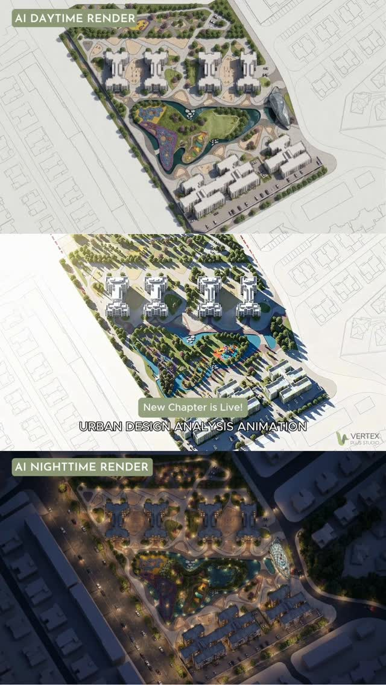
發布時間：2026-05-17 00:23:05
按讚：23 留言：6
告別 AE 地獄🔥 你一定想知的秘訣
做過都市設計或大尺度景觀的人都知道，要在評圖或提案時生出一支「分析圖動畫」，是一個多麼折磨人的過程。或你要花大錢請渲染團隊。
傳統的標準流程是：
從 Rhino/CAD 匯出幾十個圖層 ➡️ 進 Illustrator 慢慢上色 ➡️ 再全部丟進 After Effects 裡。
為了讓一棟建築「長出來」、讓一條動線跑過去，你必須在時間軸上痛苦地設定無數個關鍵影格與透明度。一支 10 秒的動態分析，往往要耗掉設計師三個晚上的睡眠。
但最近研究了新的 AI 動態工作流，我發...
直接開啟媒體（無廣告）
開啟 Instagram 原始貼文

發布時間：2026-05-15 15:02:16
按讚：55 留言：9
今天分享一套 ChatGPT Image 2.0
景觀設計指令 (6)
總平面 → 簡化分區 → 動線
→ 總體規劃 → 更多見貼文(1)-(5)
一次生成完整設計表現✨️
更可串連更多分析圖，各種後期修改
1️⃣ 總平面轉簡化分區圖
2️⃣ 總平面轉動線功能
3️⃣ 總平面轉總體規劃CAD風格
4️⃣ 總平面轉各種平立剖圖分析圖
👍試試運用工作流程放進你的景觀設計，
你會得到：
----‐‐------------
⭐️5月16日 / 5月30日
AI Sketch to Render 工作坊
早鳥優惠延至 電子...
直接開啟媒體（無廣告）
開啟 Instagram 原始貼文
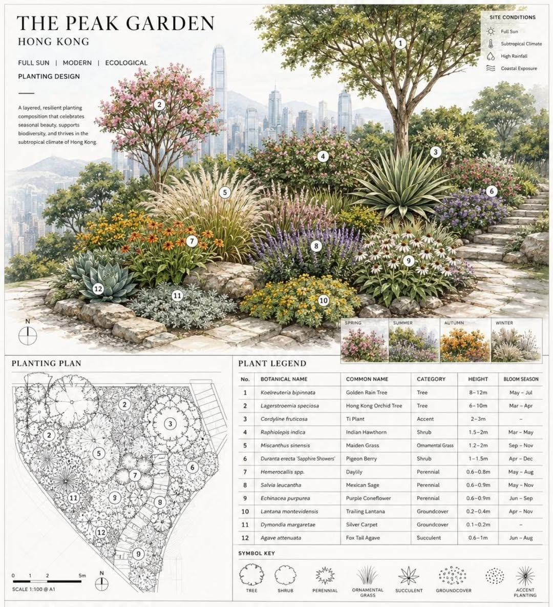
發布時間：2026-05-14 10:00:40
按讚：30 留言：0
嘗試運用專業提示詞增強控制力
用資訊及圖文結構排版
可以自定義氣候條件、植物圖例、生態效益
✅ CAD 植栽配置平面圖
✅ 包含學名與花期的 Plant Legend
✅ 視覺化的四季開花時間表
✅ 灌溉與生態分析圖表
《AI 設計視覺化 v2.0 DLC》目前 50% OFF 早鳥預售中
👇 留言「V2」，我把專屬連結私訊給你
------------------
［<a href="/profile/vertex.skills/">@vertex.skills</a>...
直接開啟媒體（無廣告）
開啟 Instagram 原始貼文

發布時間：2026-05-13 10:33:55
按讚：23 留言：2
【懶人專屬：無痛統一色調法則】
做圖最怕什麼？不同地方找來的素材，拼在一起充滿拼湊感。🤫
要讓素材看起來像是一整套的高級訂製款，秘密其實不在慢慢修圖。
我的實戰 Workflow 是這樣的：
1️⃣ 丟入高品質素材
2️⃣ 轉為黑白統一明暗
3️⃣ 疊加自訂的主題色系
只要色彩基調統一，整張圖的質感與氛圍就會瞬間到位。✨
沒有魔法，全是效率。
把這個工作流存起來，下次試試看！
👇 留言 AI 我會私訊你120+頁的實戰工作流程
------------------
［<a href="/prof...
直接開啟媒體（無廣告）
開啟 Instagram 原始貼文
發布時間：2026-05-12 11:46:18
按讚：433 留言：44
今天分享一套 ChatGPT Image 2.0
景觀設計指令 (5)
總平面 → 四季植物配置 → 商業夜間
→ 剖面功能 → 更多見貼文(1)-(4)
一次生成完整設計表現✨️
更可串連更多分析圖，各種後期修改
1️⃣ 總平面轉四季樹木配置
2️⃣ 總平面轉商業夜間景場
3️⃣ 總平面轉剖面及功能
4️⃣ 總平面轉各種平立剖圖分析圖
👍試試運用工作流程放進你的景觀設計，
你會得到：
⭐️5月16日 AI Sketch to Render工作坊
👇任意留言我會私訊120+頁的實戰工作流程
------------...
直接開啟媒體（無廣告）
開啟 Instagram 原始貼文

發布時間：2026-05-11 13:00:03
按讚：396 留言：149
是把資訊萃取的工作交給 AI
這是我最近研究的章節：
Google Earth to Mapping
我們不再手動描圖。透過 AI 轉譯，一鍵將混亂的衛星圖，轉化為乾淨的、帶有高度資訊的 Figure-ground Mapping。
把這三小時的描圖時間省下來。
去推敲你紅框裡的設計邏輯，
那才是你大腦該運作的地方。
趕快把傳給期末評圖睡在Studio，救救他的肝，讓他知道自動化的方法！
隨意留言私訊你120+頁工作流程
------------------
［<a href="/profile/v...
直接開啟媒體（無廣告）
開啟 Instagram 原始貼文
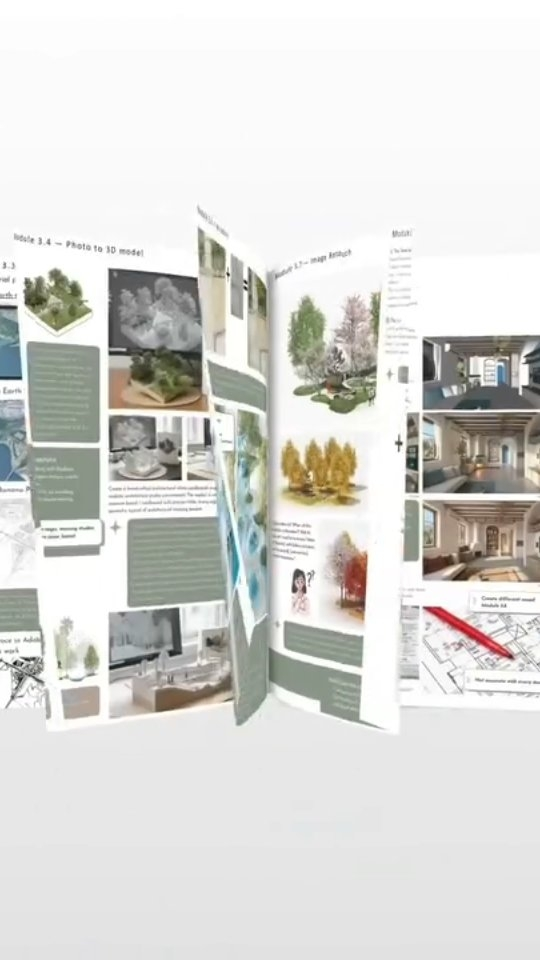
發布時間：2026-05-10 14:18:36
按讚：20 留言：18
沒想到不知不覺間，這本專為景觀、建築、室內與都市設計人打造的《AI 設計視覺化》，Life Update 竟然已經寫到了 130 頁！
真心感謝過百位讀者和脆友一路以來的支持留言和回饋，使我不停優化。這 130 頁不是指令集，而是每步都有清晰的邏輯支撐。
👉 趕快把這段話傳給群組裡那個還在為分析圖畫不完而掉頭髮的同事，送給他一本AI 工作流完全指南，叫他快快回家休息！
留言[ AI ] 私訊你實戰工作流程
直接開啟媒體（無廣告）
開啟 Instagram 原始貼文

發布時間：2026-05-08 13:12:35
按讚：72 留言：14
今天分享一套 ChatGPT Image 2.0
景觀設計指令 (4)
總平面 → 泡泡圖 → 熱力圖
→ 等軸分析圖 → 更多見貼文(1)(2)(3)
一次生成完整設計表現✨️
更可串連更多分析圖，各種後期修改
1️⃣ 總平面轉泡泡圖
2️⃣ 總平面轉熱力圖
3️⃣ 總平面轉等軸分析圖
4️⃣ 總平面轉各種平立剖圖分析圖
👍試試運用工作流程放進你的景觀設計，
你會得到：
👇任意留言我會私訊120+頁的實戰工作流程
------------------
［<a href="/profile/vert...
直接開啟媒體（無廣告）
開啟 Instagram 原始貼文

發布時間：2026-05-08 05:06:47
按讚： 留言：2
要在 Illustrator 裡把不同年代、不同比例的建築物，統一成乾淨的線稿風格，往往要耗掉一整天的時間。
看看這兩張「教科書等級」的建築演化圖。從古希臘羅馬到後現代主義，再到Le Corbusier、安藤忠雄 與 Zaha Hadid 的生涯作品回顧。
這都是透過 Nano Banana 生成的。
AI 幫我們省下了描圖的苦工，是為了讓我們有更多時間去思考：這些建築背後，到底傳承了什麼樣的空間邏輯？
留言 AI 立即私訊你120+頁的實戰工作流
直接開啟媒體（無廣告）
開啟 Instagram 原始貼文

發布時間：2026-05-07 11:04:00
按讚： 留言：0
不知不覺，經營了 9 個月的 Etsy 小店突破 600 個 Sales 啦！💚🥺
5.0 全滿星好評。⭐⭐⭐⭐⭐
繼續拿到了 Star Seller 徽章！🎖️
回想起去年剛把店鋪開起來的時候，其實心裡很沒底。這 9 個月裡，一邊做正職的 Landscape Project，一邊經營 Vertex Plus Studio Freelance + 寫書 + 工作坊，最近還要面對手術後漫長的復健期，老實說真的滿累的。
一開始只是想把我自己日常用的 AI Workflow、設計資源整理出來，沒想到能幫助到這麼多來自世界...
直接開啟媒體（無廣告）
開啟 Instagram 原始貼文

發布時間：2026-05-06 11:33:03
按讚：323 留言：41
今天分享一套 ChatGPT Image 2.0
景觀設計指令 (3)
總平面 → 植栽配置圖 → 展板
→ 等軸分析圖 → 更多見貼文(1)(2)
一次生成完整設計表現✨️
更可串連更多分析圖，各種後期修改
1️⃣ 總平面轉植栽配置圖
2️⃣ 總平面轉展板
3️⃣ 總平面轉等軸分析圖
4️⃣ 總平面轉各種平立剖圖分析圖
👍試試運用工作流程放進你的景觀設計，
你會得到：
👇任意留言我會私訊120+頁的實戰工作流程
------------------
［<a href="/profile/verte...
直接開啟媒體（無廣告）
開啟 Instagram 原始貼文

發布時間：2026-05-05 12:58:21
按讚：13 留言：0
已經舉辦了4場
AI Sketch To Render 工作坊✏️
接下來的第5場將於 5月9日 (六) 9am-1pm (GMT+8) 舉行
為慶祝 Threads 突破 7000 粉絲
特享優惠價 HKD$200 (TWD$815)
內容將教授業界 AI 設計邏輯，並破除常見迷思。會帶大家實作從手繪草圖，結合精準生成渲染圖。以及進階的風格統一，後期加速技巧串連工作流程。課後將提供 Prompt 範本等教學資源與一個月的錄影回放。
有興趣的朋友歡迎留言或 DM 報名💨💨
------------------
［&...
直接開啟媒體（無廣告）
開啟 Instagram 原始貼文
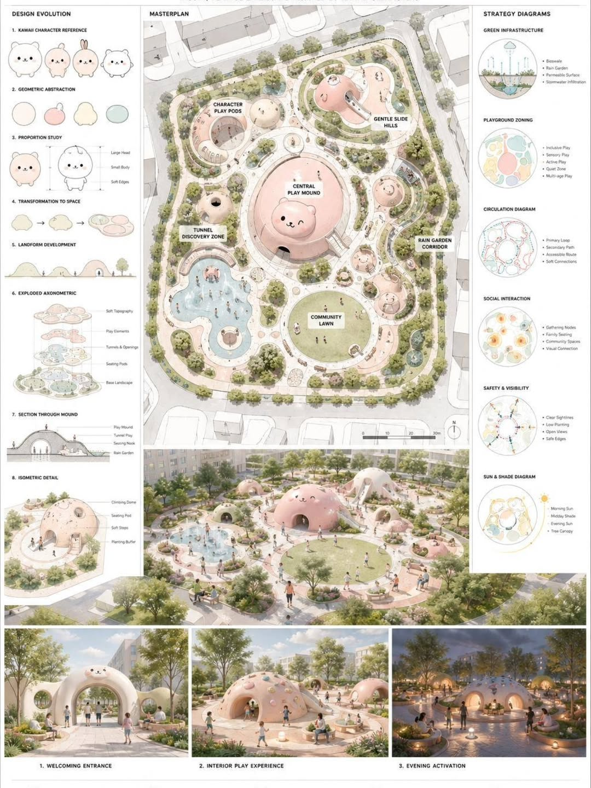
發布時間：2026-05-04 14:26:51
按讚：24 留言：0
底層邏輯不變，表層視覺百變
不用每次都從零開始想排版
而是建立一套無堅不摧的圖面框架
圖面的邏輯框架是固定的，但設計主題可以隨意切換。你想做正常遊樂場？可以。你想做 Chiikawa 遊樂場？完全沒問題。
GPT vs Gemini
AI 直接幫你把空間尺度、材質細節、甚至光影氛圍一次搞定。
主題隨便換，直接生成概念方案展板
留言 AI 私訊你 120+ 實戰工作流程
直接開啟媒體（無廣告）
開啟 Instagram 原始貼文

發布時間：2026-05-02 12:21:02
按讚：362 留言：8
今天分享一套 ChatGPT Image 2.0
景觀設計指令 (2)
總平面 → 夜間燈光平面
→ 活動分析圖 → Moodboard上色
一次生成完整設計表現✨️
完由一張手圖開始，串連至各類分析圖
甚至專案排版、大樣圖，見其他貼文
1️⃣ 總平面圖日間轉夜間
2️⃣ 總平面轉活動及動線分析圖
3️⃣ 總平面轉等Moodboard上色
4️⃣ 更多更多...
👍試試運用工作流程放進你的景觀設計，
你會得到：
Link in bio✨️ 取得120+頁
《AI 設計視覺化 中/英文版》電子書
超過150位讀者及學...
直接開啟媒體（無廣告）
開啟 Instagram 原始貼文


![別再只丟一張完成圖。
把設計拆開。讓每一層都能被看懂。
爆炸圖不是炫技，是證明你有思考順序。
圖一打開，平面 → 結構 → 空間 → 流線 → 景觀
就已經在告訴教授：「這個設計，是被推導出來的。」
圖中PSD原分析圖可在Etsy找到
👇留言 AI 私你120+頁AI視覺化工作流
------------------
［<a href="/profile/vertex.skills/">@vertex.skills</a> ]
💡 Design x AI Workflo...](https://scontent-lga3-2.cdninstagram.com/v/t51.82787-15/681821524_18084796253530037_1338182290164364834_n.heic?stp=dst-jpg_e35_p1080x1080_tt6&efg=eyJ2ZW5jb2RlX3RhZyI6ImltYWdlX3VybGdlbi4xNDQwLnNkci5yZWd1bGFyX3Bob3RvLmMyIn0&_nc_ht=scontent-lga3-2.cdninstagram.com&_nc_cat=105&_nc_oc=Q6cZ2gHGdwULZcmxXeVprnG46tWEjL2hawOUql3T7lZi6cwmnAS4IU630FKrkzLFOa-_y6EOl9__CVaYzBh2Bu2VoNwP&_nc_ohc=PSuBp6619WEQ7kNvwG1MjkZ&_nc_gid=ntEUR4OXcN7DbWrrPBVhag&edm=APU89FABAAAA&ccb=7-5&oh=00_Af_wsIFeZi4BJ-XxHZG-WlEnVCC3l0XGeZnKT7P7-Uo_pw&oe=6A2406A0&_nc_sid=bc0c2c&dl=1)